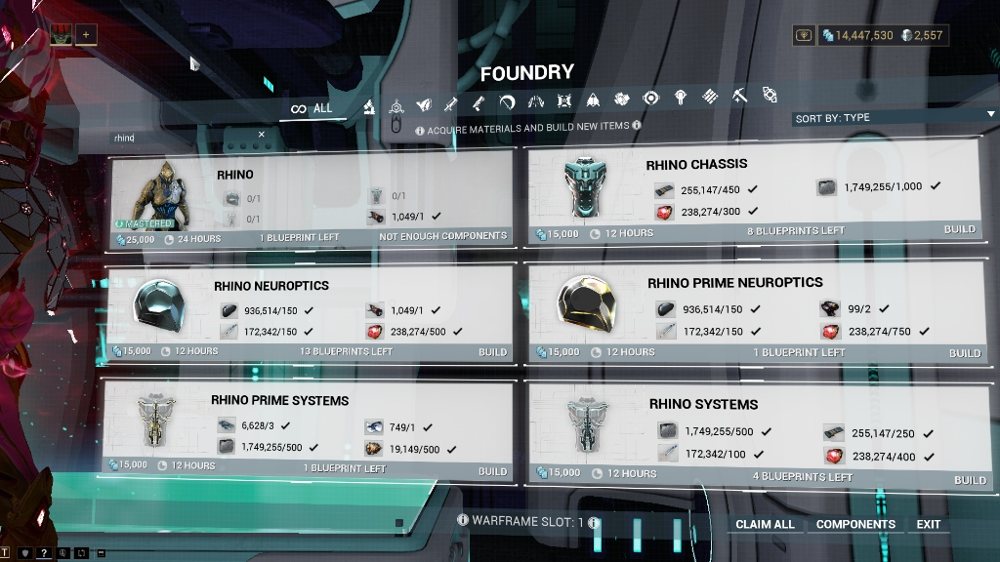
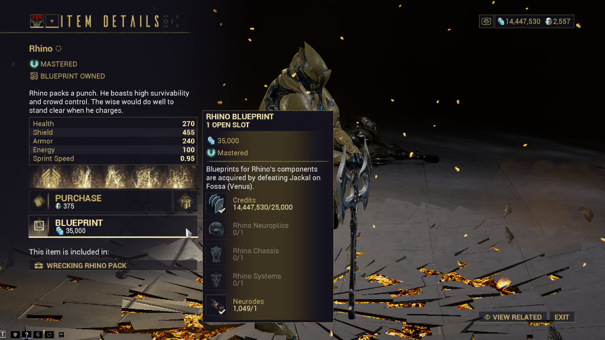

Product Brief · Model 1 · Digital Extremes
This brief is the decision. The measurement behind it is the teardown: The Venus Gate.
Decision
Put a Warframe's full material cost on the blueprint page, before the player commits to farming it — the three component blueprints rolled up, not just listed as items. Leave the Jackal drop table alone.
Because. Handing a player all three blueprints free saves zero runs in 30 of 30 plays at the measured rate. The requirement that does bind them appears nowhere in the client until after they have farmed for it.
Costs. Two display surfaces, revertible in a patch. Gives up the misdirection aiming player frustration at a system tuned correctly, and tells a new player up front what the frame really costs.
Watch. Farm-start rate on new accounts. An honest bill can deter the player it was written for.
Confidence. High on the diagnosis. The measured rate would have to be understated threefold before it moves. Medium on the fix, because I cannot see what a new player collects.
How the problem was found
A recommendation without its derivation is an opinion. This is the derivation, including the part where the first version of it was also wrong.
What I believed
That the drop table was the problem. So does most of the playerbase, and I held that view across 938 hours. Entry 11 in a ledger of predictions I got wrong.
What I measured
Twenty consecutive Jackal runs on Fossa, one session, seventy minutes, Legendary Rank 1, solo, no boosters.
What killed it
724 Circuits over twenty runs, 36 a run, so 700 takes about twenty. The three blueprints complete at 6.04 runs by exact arithmetic over DE's published weights. Two thresholds on one counter, one finishing fourteen runs early.
The mechanism also inverts. Collecting faster leaves the draws less room to resolve, so the drop table only bites for the player who explores.
What survived, and what I got wrong twice. I first wrote this as a legibility problem: the Circuit count sits in a menu nobody opens. Then I opened the client. It is worse. For a component blueprint the player does not own, no screen states its material cost at all. The market page names where components drop and lists them 0/1; the Foundry parent card does the same. Neither says what building them consumes. The requirement appears only after the farming it justifies is done.
Problem statement. A new player cannot see what a first Warframe costs until they have already paid for part of it: the material requirement lives inside component blueprints they do not own yet, and no screen in the client sums it before they commit.
Options considered
Every option priced against the same measured collection rate. The ratio between the second row and the fourth is the entire argument.
| Option | What it changes | Cost | Effect at the measured rate | Verdict |
|---|---|---|---|---|
| Do nothing | — | zero | — | Not acceptable. The complaint is loud, persistent, and aimed at the wrong system, so every hour DE spends answering it defends something already right. |
| Double the Systems drop weight | The obvious fix, and the one players ask for | Live drop-table change, published tables reissued | 0.50 runs, or 1.8 minutes of blueprint farming. At 36 Circuits a run it changes when the player leaves Venus by nothing at all, in 30 of 30 plays | Rejected. A visible concession that buys no time. |
| Publish the rolled-up bill (chosen) | What the player knows before they start | Two display surfaces | No time saved. Makes the player's plan match the game's actual requirement | Chosen. Cheapest change on the list, and the only one that fixes information the client does not currently contain. |
| Halve the Foundry assembly stage, 24h → 12h | The real wall clock | Economy change; touches a rush-purchase surface | 12 hours, roughly 400× the drop-table option | Out of v1 scope, and the more valuable change. It needs purchase data I do not have. |
Tradeoffs taken
A tradeoff is not a risk. A risk might happen; a tradeoff is a loss chosen on purpose, now.
I accept that some players will not start, in order that the ones who do can plan. A new player told up front that a first Warframe means 700 Circuits, 1,500 Ferrite, 1,200 Rubedo and thirty-six hours in the Foundry may decide it is not worth beginning. Today the game gets them started by not saying. That is a real acquisition cost, and it is the honest price of this change. I would revisit if farm-start rate falls without abandonment improving.
I accept that the complaint moves to a monetised surface. Frustration currently lands on the drop table, which costs DE nothing but goodwill. Once thirty-six Foundry hours are legible as the wall, pressure moves to the stage where rushing costs 125 platinum.
I accept that players who already know the recipe gain nothing. A first-run fix, whose whole value is in the session before a player knows what they are grinding for.
How it gets built
Verified in client, 1 September 2026. Screenshots at the foot of this page.
v1 scope, two surfaces. The market blueprint page already lists the three components as 0/1 alongside the parent recipe's Neurodes and credits. Add beneath it the summed material requirement of those three component blueprints, in the same treatment. Same roll-up on the Foundry's parent card, so a player holding one or two blueprints sees the remaining bill without opening three cards and adding them up.
What engineering does. Read three component recipes the player may not own, sum them, render into an existing requirements list. No new state, no new telemetry, no economy logic. The one real question is whether those recipes are client-authoritative before acquisition. If not, this is a data change before it is a UI change, and the estimate is wrong.
Deferred. The Foundry timer. An economy change against a purchase surface, and it needs its own brief with conversion data behind it.
Rollout and reversibility. Platform-staged, PC first, stopped by any fall in farm-start rate in week one. A display change reverts in a patch, and that is what makes it the correct first move: it buys the information about whether the expensive, irreversible option is worth making.
AI: necessary, or not
Every adaptive system in this brief had to answer four questions before it earned a place. This one failed on the third.
No. Summing three recipes and showing the total is arithmetic that was solved before there were computers to do it on.
The version worth taking seriously is the one players actually request: per-player bad-luck protection, a pity timer raising Systems odds after a dry streak. The deterministic answer is a fixed pity counter: guaranteed drop after N failures, published, identical for everyone. Where it fails: nowhere that matters here, because the condition it protects against binds 0.61% of the time at the measured rate.
What it would cost. Per-account drop telemetry, and something worse. Digital Extremes publishes its drop tables, and that publication is a trust asset in a genre where most studios do not. A per-player adjusted rate makes the published table false for every individual player. The failure mode is not a bad recommendation — it is that DE's own documentation stops being true.
How you would know it was failing. You would not, from inside the product. Players infer pity systems from streaks and argue about them elsewhere, and the ones who conclude the table is a lie do not file a ticket. A system whose failure is only observable outside the product is not one to operate here.
Success and counter-metrics
A primary metric with no counter is a target, and a target with no counter is how a team ships a number instead of a product. Thresholds marked proposed are mine, not DE's.
| Category | Metric | Definition / formula | Health indicator |
|---|---|---|---|
| PRIMARY | Circuit surplus at exit | Median Circuits held above 700 when a new account leaves Venus | +16.8 in simulation today. Falling toward zero means players are tracking the constraint that binds. Target proposed: under +8. |
| PRIMARY | Blueprint-blame rate | Share of new-player support contacts and forum threads on first-Warframe pacing that name the drop table | The complaint being aimed correctly is the point of the change. A fall here is the feature working. |
| COUNTER | Farm-start rate | New accounts that open a Warframe blueprint page and run Fossa within 48 hours | The one that decides whether this ships wide. If honesty deters starts, DE is trading acquisition for clarity and needs that priced before rollout continues. |
| COUNTER | Assembly rush rate | Foundry assembly-stage rush purchases per new account, first 14 days | Legibility moves pressure onto a monetised surface. If rush purchases fall instead of rising, the change cost revenue in a direction nobody predicted. |
The metric I would sacrifice: blueprint-blame rate. It flatters the change and connects least to whether anyone keeps playing. If it stayed flat while farm-start held and Venus abandonment fell, I would still call this a success.
What I could not see
This is analysis from outside the company. Four things would change it, and none of them are mine to look at.
The new-player collection rate. 72 and 104 Circuits a run are assumptions. I cannot measure a new player's rate without a new account and a stopwatch. DE's per-account resource telemetry settles it, and it decides how much of the playerbase sits past the threshold where the drop table starts to bite.
Whether component recipes are client-side before acquisition. The v1 estimate rests on it and only DE knows. Every screen I checked belongs to my own account, which is at Legendary Rank 1 and owns the blueprints, so I am inferring the new-player view rather than seeing it.
Rush-purchase conversion. What the Foundry change is worth in revenue lives inside DE. Everything I can say about it is wall-clock.
Circuit drop lumpiness. The model draws Circuits smoothly; the game drops them in stacks of 35 to 50. Means unaffected, spread understated, and no variance figure until it is re-derived. Ledger 19.
Provenance
Uncropped, as captured on 1 September 2026. The Foundry view shows component cards carrying material costs only because this account owns those blueprints; the market view shows what a player without them sees.

0/1. Three component cards each carry a partial bill, and nothing sums them.
Model: nine nodes, Machinations.io, 30 plays per configuration; no play truncated by a step cap. Drop weights from Digital Extremes' published tables, 2026-06-25 revision. Play data measured 2026-08-19, Legendary Rank 1 account, Normal mode, solo, no boosters. Build costs and timers verified in client 2026-09-01: components 12 hours and 15,000 credits each, parent assembly 24 hours and 25,000, market blueprint 35,000. That is 105,000 credits and 36 hours in total, matching the published recipe.
This brief is the decision. The measurement behind it is the teardown: The Venus Gate.